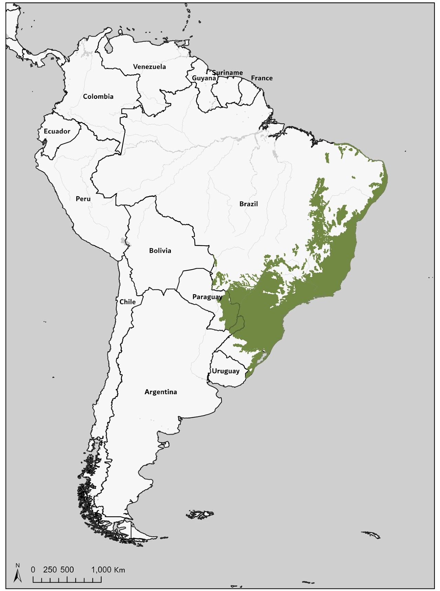
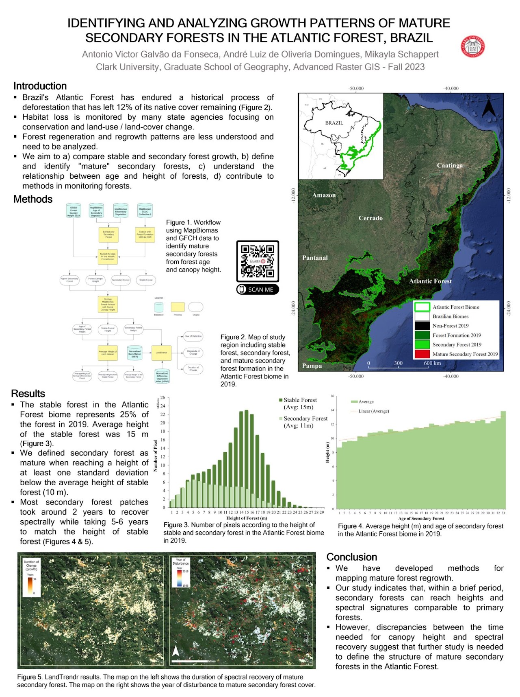
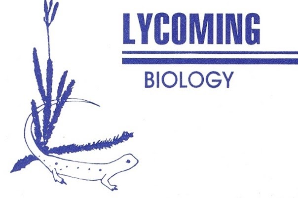

Ph.D. Geography dissertation
Biodiversity through space, time and sound
Investigating land-change processes, scale of effect, and matrix quality on biodiversity in the Atlantic Forest of Brazil.
Clark University · 2023–current
Research portfolio
01 / Current work

Ph.D. Geography dissertation
Investigating land-change processes, scale of effect, and matrix quality on biodiversity in the Atlantic Forest of Brazil.
Clark University · 2023–current
02 / Past projects

M.A. Geography thesis · 2023

Advanced raster GIS research · 2023
Interactive GIS applications · 2021
Research internship · 2017–2020